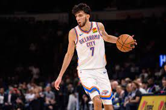
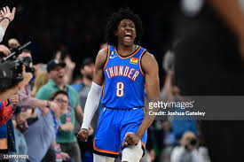

The Thunder haven't really been a great team since the "Kevin Durant" era. They had superstars Kevin Durant, Russel Westbrook, and upcoming star at the time James Harden. In the 2016 playoffs they were up 3-1 to the Golden State Warriors but they came back, winning the last 3 games and kicking OKC out of the playoffs. That offseason Kevin Durant, instead of resigning, signed with the Golden State Warriors, who just beat them in the playoffs. It was considered one of the weakest moves by a superstar and the Thunder have gone downhill since then
The Thunder have been in a rebuilding stage for a while, where we basically invested in our future instead of the current seasons. Last year we got a ton of great rookies, including young stars Chet Holmgren, Jalen Williams, and Josh Giddey. We also picked more rookies with great potential including Tre Mann and Ousman Dieng. Along with the Thunder's Current superstar Shai Gilgeous-Alexander, who was drafted in 2018 and eventually traded to the Thunder and averaged 31.4 points a game in the 2022-2023 season, the Thunder have amazing potential for the upcoming season.
 